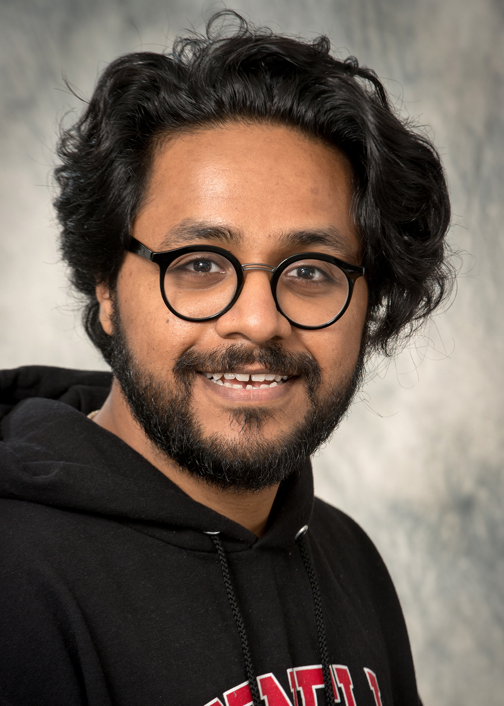

Currently active — Altos Labs, San Diego
I am a senior scientist at Altos Labs, where I study how aging and fibrosis erode tissue homeostasis — and explore cellular reprogramming as a strategy to reverse that decline.
I hold a Ph.D. in Cell Biology from Cornell University and an undergraduate degree in Biotechnology Engineering from RV College of Engineering, India.
I am drawn to the systems-level precision with which living organisms are built: the molecular programs that establish structure, maintain function, and eventually fail. My work asks whether those programs can be read, interrupted, and rewritten.
